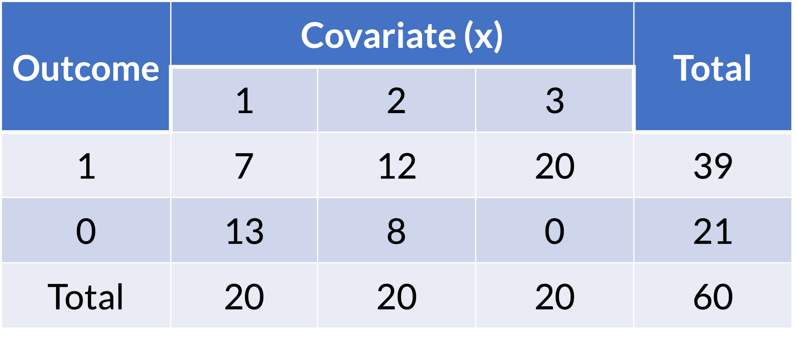
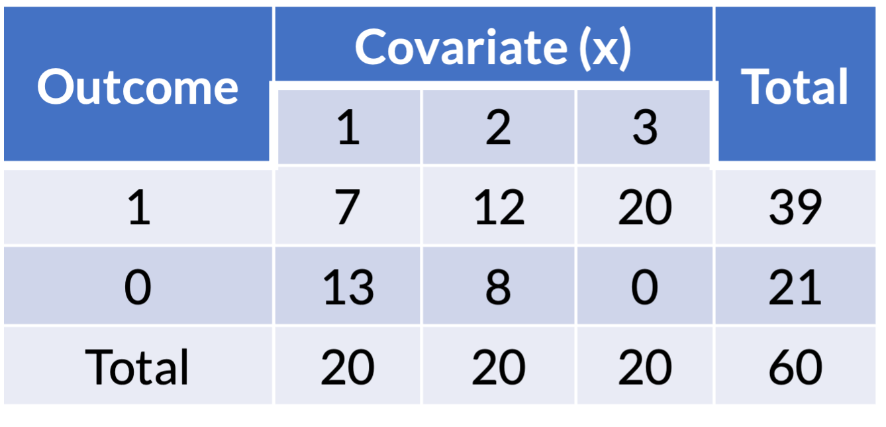
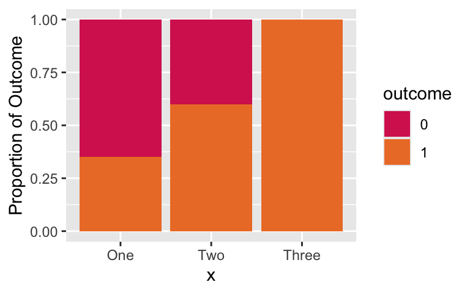
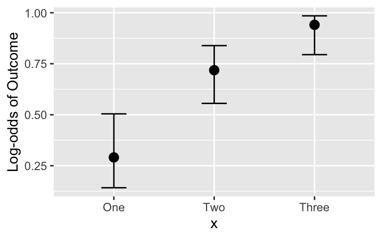
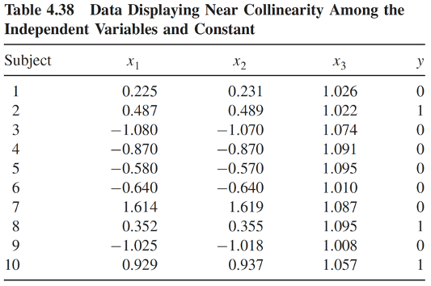
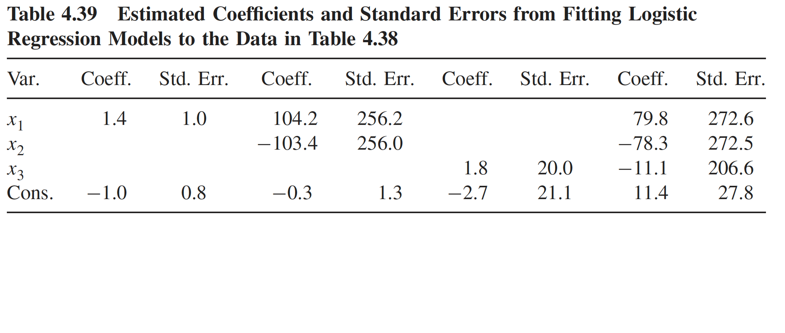
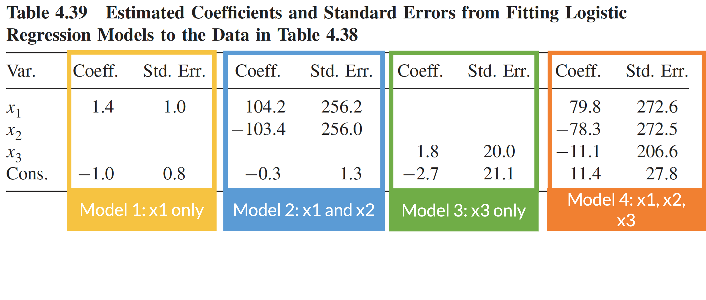
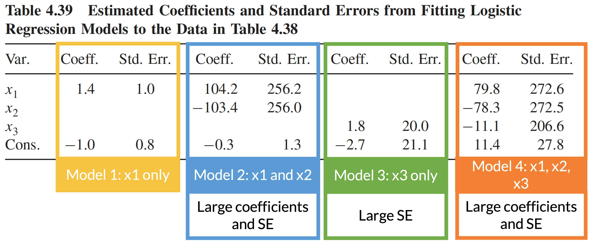

2025-05-05
Identify and troubleshoot logistic regression analysis when there are low or zero observations for the cross section of the outcome and a predictor
Identify and troubleshoot logistic regression analysis when there is complete separation between the two outcome groups
Identify and troubleshoot logistic regression analysis when there is multicollinearity between variables
Issues that may cause numerical problems:
Identify and troubleshoot logistic regression analysis when there is complete separation between the two outcome groups
Identify and troubleshoot logistic regression analysis when there is multicollinearity between variables


| term | estimate | std.error | statistic | p.value | conf.low | conf.high |
|---|---|---|---|---|---|---|
| (Intercept) | −0.62 | 0.47 | −1.32 | 0.19 | −1.60 | 0.27 |
| xTwo | 1.02 | 0.65 | 1.57 | 0.12 | −0.23 | 2.35 |
| xThree | 20.19 | 2,404.67 | 0.01 | 0.99 | −119.00 | NA |
Coefficient estimate is large and standard error is large! Estimated odds ratio is very large and confidence interval cannot be computed.

Combine groups 2 and 3:
ex1_23 = ex1 %>%
mutate(x = factor(x, levels = c("One", "Two", "Three"),
labels = c("One", "Two-Three", "Two-Three")))
ex1_23_glm = glm(outcome ~ x, data = ex1_23, family = binomial)
tbl_regression(ex1_23_glm, exponentiate=T) %>% as_gt() %>%
tab_options(table.font.size = 38)| Characteristic | OR1 | 95% CI1 | p-value |
|---|---|---|---|
| x | |||
| One | — | — | |
| Two-Three | 7.43 | 2.32, 26.3 | 0.001 |
| 1 OR = Odds Ratio, CI = Confidence Interval | |||
Based on our previous visual, I don’t think this is a good idea
Look at the estimated OR comparing group 2 to group 1 from our original model: 2.79 (95% CI: 0.79, 10.5)
Remove group 3 from the data:
ex1_two = ex1 %>% filter(x != "Three")
ex1_two_glm = glm(outcome ~ x, data = ex1_two, family = binomial())
tbl_regression(ex1_two_glm, exponentiate=T) %>% as_gt() %>%
tab_options(table.font.size = 38)| Characteristic | OR1 | 95% CI1 | p-value |
|---|---|---|---|
| x | |||
| One | — | — | |
| Two | 2.79 | 0.79, 10.5 | 0.12 |
| 1 OR = Odds Ratio, CI = Confidence Interval | |||
When we treat a predictor as continuous, we need to make sure we have linearity between continuous predictor and log-odds
Cannot test this before fitting the logistic regression with the continuous predictor
Test linearity by fitting logistic regression with the continuous predictor, then visually examining if predicted probabilities from that model match with approximate sample proportions
ex1_cont = ex1 %>% mutate(x = as.numeric(x))
ex1_cont_glm = glm(outcome ~ x, data = ex1_cont, family = binomial())
tbl_regression(ex1_cont_glm, exponentiate=T) %>% as_gt() %>%
tab_options(table.font.size = 38)| Characteristic | OR1 | 95% CI1 | p-value |
|---|---|---|---|
| x | 6.22 | 2.63, 18.0 | <0.001 |
| 1 OR = Odds Ratio, CI = Confidence Interval | |||

newdata = data.frame(x = c(1, 2, 3))
pred = predict(ex1_cont_glm, newdata, se.fit=T, type = "link")
LL_CI1 = pred$fit - qnorm(1-0.05/2) * pred$se.fit
UL_CI1 = pred$fit + qnorm(1-0.05/2) * pred$se.fit
pred_link = cbind(Pred = pred$fit, LL_CI1, UL_CI1) %>% inv.logit()
pred_prob = as.data.frame(pred_link) %>% mutate(x = c("One", "Two", "Three"))ggplot() +
geom_bar(data = ex1, aes(x = x, fill = outcome), stat = "count", position = "fill") +
labs(y = "Proportion of Outcome") +
scale_fill_manual(values=c("#D6295E", "#ED7D31")) +
geom_point(data = pred_prob, aes(x = x, y=Pred), size=3) +
geom_errorbar(data = pred_prob, aes(x = x, y=Pred, ymin = LL_CI1, ymax = UL_CI1), width = 0.25)
x) align with the sample proportions?This looks pretty good. We’ve mostly captured the trend of the outcome proportion!
Note that we may not see the zero count cells in a single predictor
If you see a big coefficient estimate with a big standard deviation for a specific category or interaction…
My suggestion is to try possible solutions in this order
Complete separation: occurs when a collection of the covariates completely separates the outcome groups
Problem: the maximum likelihood estimates do not exist
outcome x1 x2
1 0 1 3
2 0 2 2
3 0 3 -1
4 0 3 -1
5 1 5 2
6 1 6 4
7 1 10 1
8 1 11 0
Warning: glm.fit: fitted probabilities numerically 0 or 1 occurredOutcomes of 0 and 1 are completely separated by x2
x1 > 4 then outcome is 1x1 < 4 then outcome is 0
Coefficient estimates:
| term | estimate | std.error | statistic | p.value | conf.low | conf.high |
|---|---|---|---|---|---|---|
| (Intercept) | −66.10 | 183,471.72 | 0.00 | 1.00 | −10,644.72 | 10,512.52 |
| x1 | 15.29 | 27,362.84 | 0.00 | 1.00 | −3,122.69 | NA |
| x2 | 6.24 | 81,543.72 | 0.00 | 1.00 | −12,797.28 | NA |
x1 is largex1’s coefficient is largex2 are large!The occurrence of complete separation in practice depends on
Example: 25 observations and only 5 have “success” outcome
In most cases, the occurrence of complete separation is not bad for clinical importance
Collapse categorical variables in a meaningful way
Exclude x1 from the model
Firth logistic regression
Uses penalized likelihood estimation method
Basically takes the likelihood (that has no maximum) and adds a penalty that makes the MLE estimatable
library(logistf)
m1_f = logistf(outcome ~ x1 + x2, data = ex3, family=binomial)
summary(m1_f) # Cannot use tidy on this :(logistf(formula = outcome ~ x1 + x2, data = ex3, family = binomial)
Model fitted by Penalized ML
Coefficients:
coef se(coef) lower 0.95 upper 0.95 Chisq p
(Intercept) -2.9748898 1.7244237 -15.47721665 -0.1208883 4.2179522 0.03999841
x1 0.4908484 0.2745754 0.05268216 2.1275832 5.0225056 0.02501994
x2 0.4313732 0.4988396 -0.65793078 4.4758930 0.7807099 0.37692411
method
(Intercept) 2
x1 2
x2 2
Method: 1-Wald, 2-Profile penalized log-likelihood, 3-None
Likelihood ratio test=5.505687 on 2 df, p=0.06374636, n=8
Wald test = 3.624899 on 2 df, p = 0.1632538Identify and troubleshoot logistic regression analysis when there are low or zero observations for the cross section of the outcome and a predictor
Identify and troubleshoot logistic regression analysis when there is complete separation between the two outcome groups
Looking at correlations among pairs of variables is helpful but not enough to identify multicollinearity problem
Table below is a simulated data with
Therefore, \(x_1\) and \(x_2\) are highly correlated, and \(x_3\) is nearly collinear with the constant term

Four logistic regression models using data in the previous slide
Consequence of multicollinearity: large coefficient estimates and/or standard errors

Four logistic regression models using data in the previous slide
Consequence of multicollinearity: large coefficient estimates and/or standard errors

Four logistic regression models using data in the previous slide
Consequence of multicollinearity: large coefficient estimates and/or standard errors

Multicollinearity only involves the covariates
Computed by regressing each variable on all the other explanatory variables
Calculate the coefficient of determination, \(R^2\)
Each covariate has its own VIF computed
Get worried for multicollinearity if VIF > 10
Sometimes VIF approach may miss serious multicollinearity
Exclude the redundant variable from the model
Scaling and centering variables
Other modeling approach (outside scope of this class)
Identify and troubleshoot logistic regression analysis when there are low or zero observations for the cross section of the outcome and a predictor
Identify and troubleshoot logistic regression analysis when there is complete separation between the two outcome groups
Identify and troubleshoot logistic regression analysis when there is multicollinearity between variables
Lesson 11: Numerical Problems